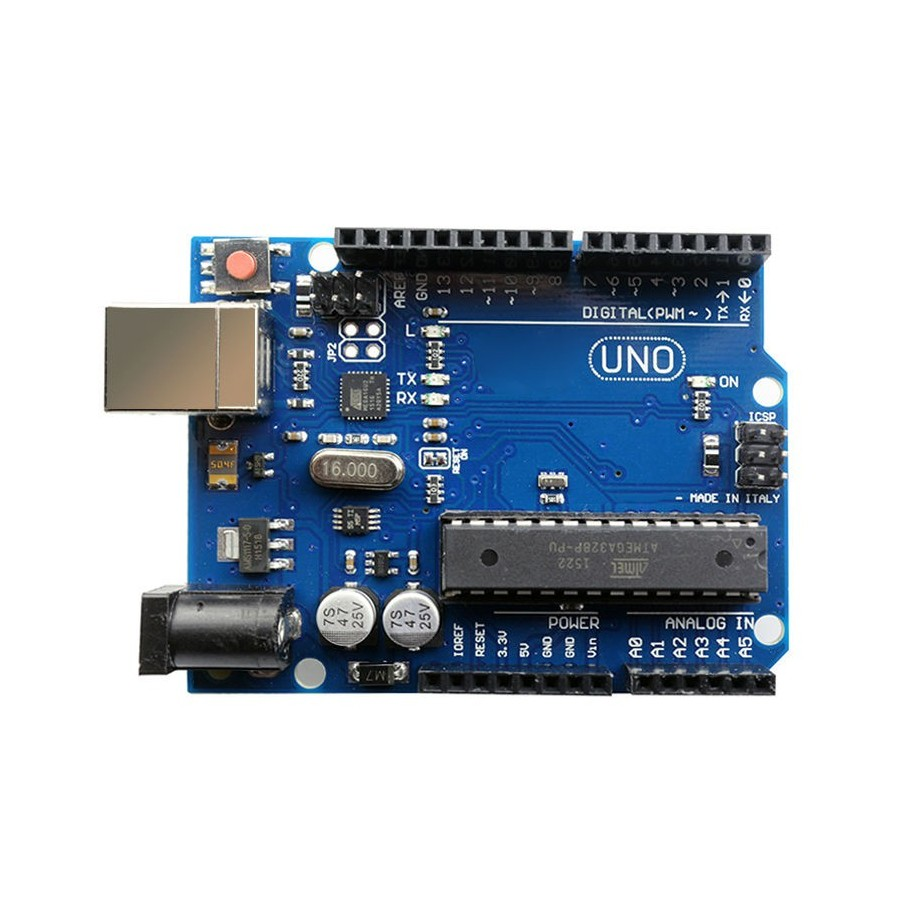

หน่วยที่ 1: งานเลือกใช้ไมโครคอนโทรลเลอร์
การคัดเลือกและวิเคราะห์คุณสมบัติของไมโครคอนโทรลเลอร์เพื่อนำมาประยุกต์ใช้งานในระบบอินเตอร์เฟซได้อย่างมืออาชีพ
- อธิบายสถาปัตยกรรมและองค์ประกอบพื้นฐานของไมโครคอนโทรลเลอร์ได้
- เปรียบเทียบข้อดีและข้อจำกัดของไมโครคอนโทรลเลอร์ตระกูลต่างๆ ได้
- วิเคราะห์ความต้องการของงานด้านสมองกลฝังตัวได้
- สืบค้นข้อมูลจาก Datasheet และเลือกใช้ไมโครคอนโทรลเลอร์ได้เหมาะสมกับลักษณะงาน
1. ความรู้เบื้องต้นเกี่ยวกับไมโครคอนโทรลเลอร์
ไมโครคอนโทรลเลอร์ (Microcontroller) เปรียบเสมือนคอมพิวเตอร์ขนาดเล็กที่รวมทุกอย่างไว้ในชิปเดียว เพื่อใช้ในการควบคุมอุปกรณ์หรือระบบต่างๆ
1.1 ชนิดและตระกูลที่นิยมใช้งานในปัจจุบัน

AVR Family
เช่น ATmega328P (Arduino Uno) ยอดนิยมสำหรับผู้เริ่มต้น ใช้งานง่าย ไลบรารีเยอะ
PIC Family
จาก Microchip มีความทนทานสูง หลากหลายรุ่น เหมาะกับงานอุตสาหกรรม
ARM Cortex-M
เช่น STM32, RP2040 ประสิทธิภาพสูง 32-bit เหมาะกับงานที่ต้องการพลังประมวลผล
Wireless SoCs
เช่น ESP8266, ESP32 มี Wi-Fi/Bluetooth ในตัว เหมาะมากสำหรับงาน IoT
1.2 คุณสมบัติหลักและองค์ประกอบสำคัญ
- CPU: หน่วยประมวลผล (8-bit, 16-bit, 32-bit)
- Memory:
- Flash (เก็บโปรแกรม)
- RAM (เก็บข้อมูลชั่วคราว)
- EEPROM (เก็บข้อมูลถาวรขนาดเล็ก)
- I/O Ports: Digital I/O, ADC (แอนะล็อก), PWM
- Peripherals: UART, SPI, I2C, Timer/Counter
2. หลักการและขั้นตอนในการเลือกใช้
2.1 การวิเคราะห์ความต้องการของงาน (Requirement Analysis)
- วัตถุประสงค์: งานคืออะไร? (ควบคุม simple ON/OFF หรือประมวลผลภาพ)
- I/O: ต้องการใช้ขากี่ขา? ต่อเซนเซอร์อะไรบ้าง?
- พลังงาน: ใช้แบตเตอรี่หรือไม่? (ต้องการ Low Power หรือไม่)
- การสื่อสาร: ต้องต่อ Wi-Fi หรือส่งข้อมูลผ่าน Serial หรือเปล่า?
- งบประมาณ: ต้นทุนต่อชิ้นต้องไม่เกินเท่าไหร่?
2.2 เกณฑ์การคัดเลือก
คือการนำคุณสมบัติที่มีในชิป มาจับคู่กับความต้องการที่เราวิเคราะห์ไว้ โดยพิจารณาความสมดุลระหว่าง ประสิทธิภาพ ราคา และความง่ายในการพัฒนา
3. การสืบค้นและเปรียบเทียบข้อมูล
3.1 การอ่าน Datasheet
Datasheet คือคัมภีร์ของผู้พัฒนา หัวข้อสำคัญที่ต้องดูคือ:
- Pin Configuration (ขาไหนทำหน้าที่อะไร)
- Electrical Characteristics (ใช้ไฟกี่โวลต์ กินกระแสเท่าไหร่)
- Memory Map (มีพื้นที่เก็บโปรแกรมพอไหม)
3.2 การเปรียบเทียบข้อมูล (Comparison)
| คุณสมบัติ | ATmega328P | ESP32 | STM32F103 |
|---|---|---|---|
| Bit-width | 8-bit | 32-bit | 32-bit |
| Speed | 16-20 MHz | Up to 240 MHz | 72 MHz |
| Wireless | ไม่มี | Wi-Fi & BT | ไม่มี |
| จุดเด่น | ใช้ง่าย ทนทาน | IoT แรงสูง | งานอุตสาหกรรม |
4. การตัดสินใจเลือกใช้
เมื่อได้ข้อมูลครบถ้วนแล้ว ให้ตัดสินใจโดยพิจารณาปัจจัยเสริม เช่น:
- ความคุ้นเคย: ทีมงานมีความเชี่ยวชาญเครื่องมือตัวไหน?
- Library: มีโค้ดตัวอย่างหรือไลบรารีสนับสนุนเยอะไหม?
- Availability: หาซื้อได้ง่ายหรือไม่ในระยะยาว?
5. การแลกเปลี่ยนความคิดเห็น
ให้นักเรียนจับกลุ่มอภิปรายกรณีศึกษา: "หากต้องการสร้างระบบรดน้ำต้นไม้อัตโนมัติที่ส่งข้อมูลผ่านมือถือได้ ควรเลือกใช้ไมโครคอนโทรลเลอร์ตระกูลใด เพราะเหตุใด?"
สรุปเนื้อหา
การเลือกใช้ไมโครคอนโทรลเลอร์ที่ถูกต้อง ไม่ใช่การเลือกตัวที่แรงที่สุด แต่คือการเลือกตัวที่ "เหมาะสมที่สุด" กับงาน ทั้งในด้านความสามารถ ราคา และการสนับสนุนเครื่องมือพัฒนา การเริ่มต้นจากการวิเคราะห์ความต้องการที่ชัดเจนและสืบค้นข้อมูลจาก Datasheet จะช่วยให้การออกแบบระบบอินเตอร์เฟซประสบความสำเร็จ